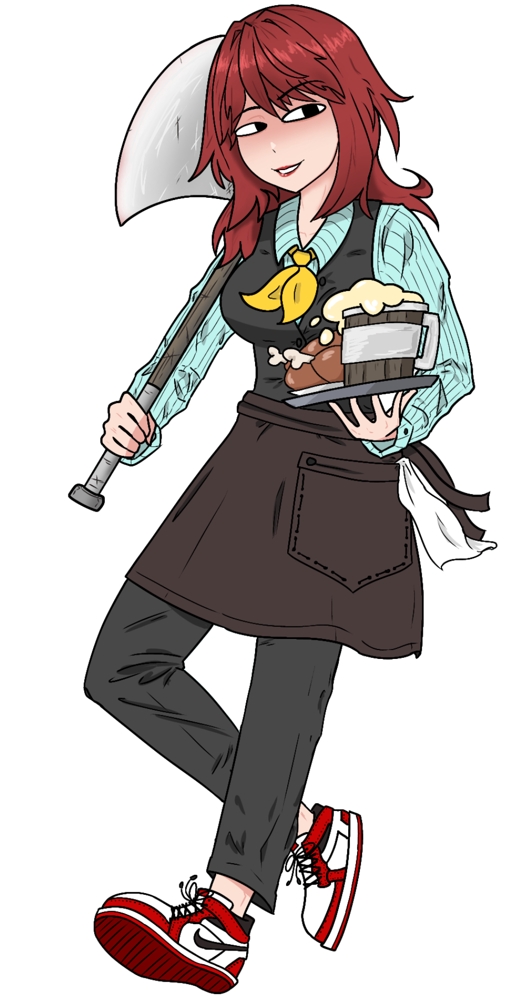
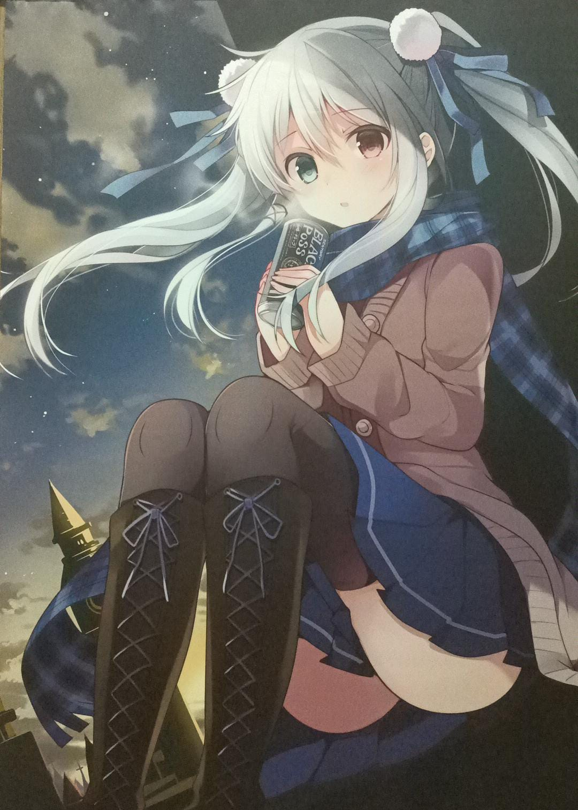
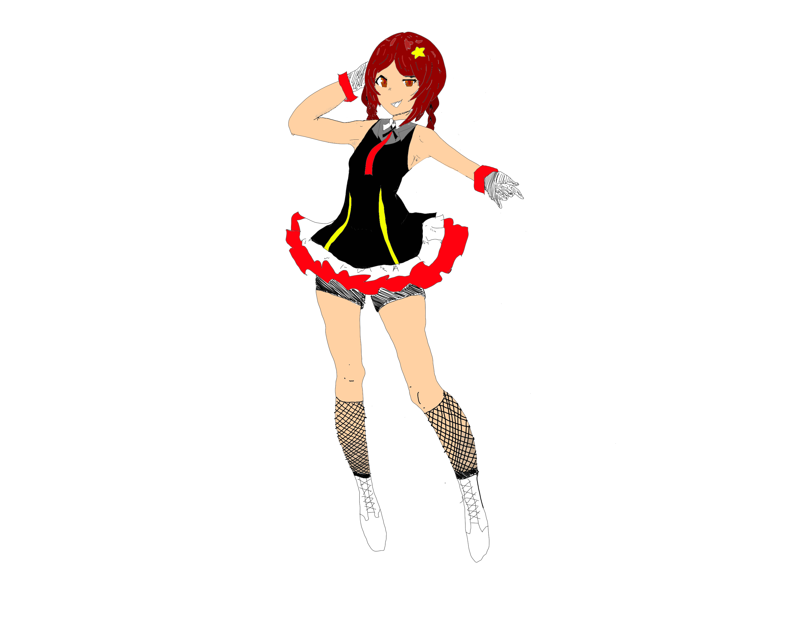
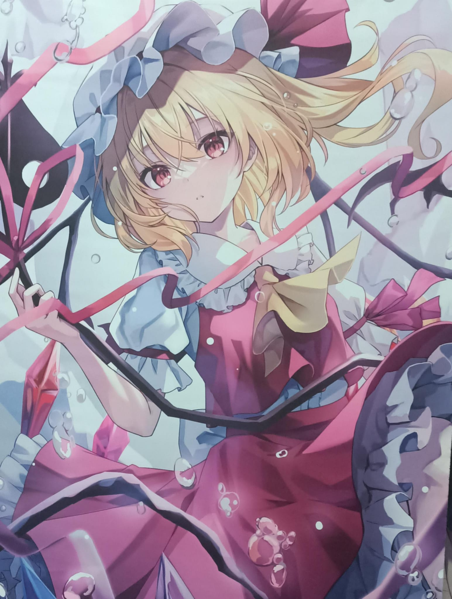

Synopsis: In the bustling world of aspiring idols, where dreams harmonize with melodies, emerges a small-time sensation named Tav. With a voice that echoes passion and a heart fueled by ambition, Tav navigates the vibrant cityscape, chasing stardom one cover at a time. Tav's journey unfolds against the backdrop of a close-knit community where small gigs and intimate performances set the stage for her rise. While she may be a diamond in the rough, Tav's charm lies in her authenticity, captivating audiences with each note and leaving an indelible mark on the hearts of those who witness her performances. Amidst the challenges of the competitive idol scene, Tav's story is a testament to resilience and the power of self-expression. From busking on street corners to sharing covers on social media, Tav's determination to carve out a space for herself in the industry resonates with anyone who has dared to dream. As Tav's popularity grows, she finds herself entangled in a web of friendships, rivalries, and unexpected alliances. Through it all, she discovers that the journey towards stardom is not just about reaching the top but about the people she meets along the way. Tav learns to navigate the highs and lows of fame, discovering the true essence of success lies in staying true to oneself.
Synopsis: x In the bustling world of aspiring idols, where dreams harmonize with melodies, emerges a small-time sensation named Tav. With a voice that echoes passion and a heart fueled by ambition, Tav navigates the vibrant cityscape, chasing stardom one cover at a time. Tav's journey unfolds against the backdrop of a close-knit community where small gigs and intimate performances set the stage for her rise. While she may be a diamond in the rough, Tav's charm lies in her authenticity, captivating audiences with each note and leaving an indelible mark on the hearts of those who witness her performances. Amidst the challenges of the competitive idol scene, Tav's story is a testament to resilience and the power of self-expression. From busking on street corners to sharing covers on social media, Tav's determination to carve out a space for herself in the industry resonates with anyone who has dared to dream. As Tav's popularity grows, she finds herself entangle d in a web of friendships, rivalries, and unexpected alliances. Through it all, she discovers that the journey towards stardom is not just about reaching the top but about the people she meets along the way. Tav learns to navigate the highs and lows of fame, discovering the true essence of success lies in staying true to oneself.
Disclaimer, this concept is purely fictional and is only related to one intended person with their knowledge and consensus.
The concept of Idol Tav started with the design. Obviously, there were multiple designs. Originally, I first came up witha simple design based on this banner I had.
Inspiration 1
Art: Kurone Mishima, Mishima calendar series. Some works: Konosuba, Akashic Records
Inspiration Exposition
///////////////////
A dark theme was used to portray a dark theme while the fair skin and white hair was to show that her external features were white (pure). However, instead of that shirt, it was planned to have a pure black long dress, while being taller and older.
A second design came up to compare to the first. As there were no references this time, here was the version 1 sketch.
Design number 2
Art: Me. What else did you expect? I'm a terrible artist
Inspiration Exposition
///////////////////
This is the current design. It was designed mostly from a redhead type, with sadism potential.
There was also design 3 (kure~pu on Danbooru), however in the end Tav herself gave a vague request about a red hair, tavern style setting, and Kira asked his friend @EmonPH to draw the logo (bottom). Thanks again~
Design number 3
Art: Kure~pu on Danbooru. If you know you know.
Design number 4

Art: EmonPH on youtube. He doesn't post any art stuff there tho :p